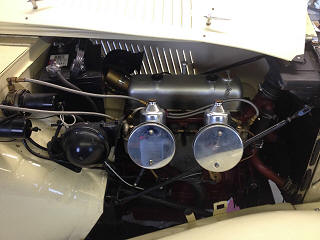
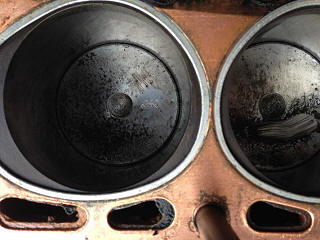
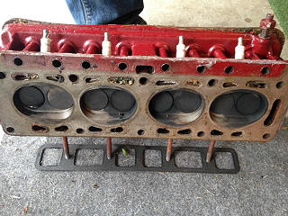
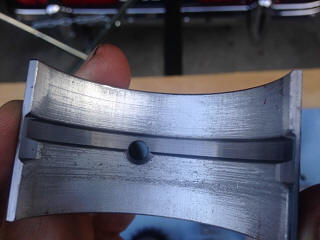
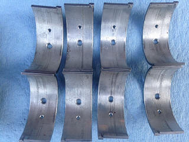
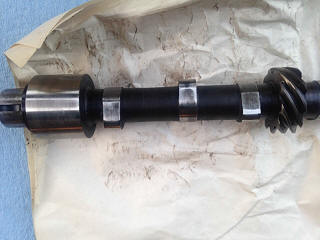
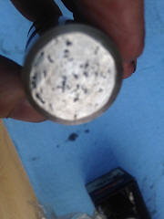
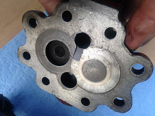
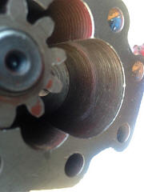

|
|
|
|
|
|
|
|
|
|
|
|
|
|
|
|
|
|
|
|
|
|
(as appeared in the Fall, 2015 TSR)
By Charlie Adams
Last year, I decided to carefully assess the condition of my MGTD’s motor as part of the completion of its restoration. I made this decision despite knowing the engine had been previously rebuilt.
Few details were available about the condition of the engine. The previous owner’s son said the engine had been started a few times after 2005. When I went to view the car in late 2013, the engine was briefly run. The engine sounded well enough, but the oil pressure rose no higher than 40 pounds, which gave me a spot of concern. I used this information in deciding on my offer for the car.
Later, I obtained a few details from the car’s second owner and his brother, both of whom I located after a lengthy search. These gentlemen were excited to talk about the car and told me it had covered about 35,000 miles by the time it was taken off the road in 1960. That year, the engine had a rod bearing failure sufficient to ruin the original crankshaft. A replacement crankshaft was located a few years later, and the car changed hands in 1983 before the engine was rebuilt. After the engine was rebuilt in the 1990s or early 2000s, it was started for the first time since 1960.
After I purchased this TD, I wrestled with the question of whether to pull the engine apart for inspection, or to put it on the road and hope for the best. After consulting with friends, whose opinions were divided, I decided to tear the engine down. I wanted peace of mind.
This decision was driven by my lack of information about what had been done, my assessment that shortcuts had been taken in other areas of the car’s restoration, as well as the number of years since the rebuild. I had also become concerned about the fact the engine had been occasionally started, but never run sufficiently to be run in. This information and the amount of oil pressure I noted after its cold startup, lead me to decide I had to assure myself all was well inside the engine.
After I pulled the engine from the car and removed the head, I immediately saw some rebuilding had been done. I found fresh looking 0.040 pistons, and a fairly clean looking combustion chambers in the head.
 
Unfortunately, as I dug deeper into the engine, I found the rebuild was a partial one and some unwarranted shortcuts had been taken. Moreover, grit moving through the engine had caused damage.
Here is what I found:
- The main and rod bearings, and crankshaft were scored;
- The original worn cam had been reused without servicing despite some lobe damage;
- The lifters were badly pitted;
- The timing chain and sprockets had not been replaced;
- The pushrods included some with loose tips;
- The head had been refaced and valves lapped, but the valve rocker tips were galled and the rocker shaft was well worn;
- The oil pump was outside of the factory specifications; and,
- The pistons and rings were lightly scored, as were the cylinders.
The following photos show the main and rod bearings damaged from dirt or grit. The crankshaft showed similar scoring.
 
Camshaft and lifters. Modest wear is visible on the camshaft lobes, but the lifters are significantly pitted.
 
Oil Pump. Visible wear is seen on the pump cover and some scoring within the pump body.
 
My goal in this rebuild is to assure I have at least all of the power these engines were capable of in stock form, and hopefully a little more. Here are my on-going steps to prepare for the rebuild.
- The block, crankshaft and head are at a local machine shop in Fairfax, Virginia. The cylinders will be lightly honed, the crankshaft was at 0.010 and has been cut to 0.020 under, and the block will be lightly surfaced. The head will be surfaced to reduce its thickness slightly to raise the compression to about 8.6 to one. It will receive hardened exhaust valve seats and the valves will be lapped.
- When I receive the head, I will lightly port and polish it, and match up the inlet and exhaust ports with the manifold ports. I’ll also grind and polish the inlet manifold to match the carburetor bores. This head already has larger intake and exhaust valves since it is a TD/C head.
- I’ve sent the oil pump to John Twist in Michigan for rebuilding.
- I’ve asked Delta Camshaft of Tacoma, Washington to refurbish either my TD camshaft and lifters, or the MG TF camshaft and lifters I provided, which appeared to be in overall better condition.
- The distributer has gone off to Jeff Schlemmer of Advance Distributors in Shakopee, Minnesota for rebuilding.
- I’m sending the rocker arm assembly to the Rocker Arms Unlimited of Redding, California (formerly the Rocker Arms Specialist) for rebuilding.
- I’m going to have the flywheel lightened by 4 to 6 pounds. This work will be done either by Miller’s Mule Machine and Design of Kady, Texas, or Automotive Parts & Machine of Frederick, Maryland. Relatively few machine shops have a lathe large enough to do this work well. The plan for lightening the flywheel would remove about 4 ½ pounds, which is a conservative amount. The plan I have for the flywheel lightening is one drawn by Bob Grunau based on the engine prepared by MG for its competition car number EX 172.
- I’m sending the exhaust manifold to Jet Hot of Burlington, North Carolina for coating both inside and out which will reduce radiant heat.
- Parts are starting to arrive from Moss Motors USA and Europe, Abington Spares, and MGT Repair of Bar Harbor, Maine.
- The engine will be closely balanced before reassembly, but I have not yet identified the shop that will do this important work. As I disassembled the engine, I noted the rods have an 11-gram difference between the lightest and heaviest rods, while the new pistons weighed within a gram of each other.
I’m looking forward to reporting on my progress in the next issue!